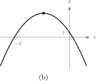

10.5 Bayes’ theorem
Conditional probability so far has run forwards: given the cause, how likely is the effect. Bayes’ theorem runs it backwards — given that the effect was observed, how likely is each possible cause.
Note 10.29. Total probability. If \(A_1,A_2,\ldots ,A_n\) divide the sample space between them, with none of them impossible, then any event \(B\) can be reached only through one of them, and \[P(B)=\sum _{i=1}^{n}P\left (B\mid A_i\right )P\left (A_i\right ).\] On a tree diagram this is simply: multiply along each branch that ends in \(B\), then add those products.
Definition 10.30. For events \(A\) and \(B\) of non-zero probability, \[P(A\mid B)=\frac {P(B\mid A)\,P(A)}{P(B)}.\] Writing the denominator out over the two cases \(A\) and \(A^c\) gives the form used in practice: \[P(A\mid B)=\frac {P(B\mid A)\,P(A)} {P(B\mid A)\,P(A)+P\left (B\mid A^c\right )P\left (A^c\right )}.\]
Note 10.31. The numerator is one branch of the tree and the denominator is every branch that could have produced \(B\), the numerator among them. So the answer is always the share that one branch takes of the total — which is why it can never exceed \(1\).
Example 10.32. A workshop makes bolts on two machines. Machine \(A\) produces \(65\%\) of the output and \(3\%\) of its bolts are defective. Machine \(B\) produces the remaining \(35\%\), of which \(6\%\) are defective. A bolt is picked at random and found to be defective. What is the probability that it came from machine \(B\)?
Solution. Step 1 — name the events. \[A:\text { the bolt came from machine } A,\qquad B:\text { the bolt came from machine } B,\] \[D:\text { the bolt is defective}.\] We are told \[P(A)=0.65,\quad P(B)=0.35,\quad P(D\mid A)=0.03,\quad P(D\mid B)=0.06,\] and we want \(P(B\mid D)\) — note that this is the reverse of what was given.
Step 2 — draw the tree.

Step 3 — find \(P(D)\), the total probability of a defective bolt. \[P(D)=P(D\mid A)P(A)+P(D\mid B)P(B)=(0.03)(0.65)+(0.06)(0.35)\] \[=0.0195+0.0210=0.0405.\]
Step 4 — apply Bayes’ theorem. \[P(B\mid D)=\frac {P(D\mid B)P(B)}{P(D)}=\frac {0.0210}{0.0405}=\frac {210}{405} =\frac {14}{27}\approx 0.519.\]
\[\therefore \quad \text {the probability that the defective bolt came from } B \text { is } \frac {14}{27}.\]
Note 10.33. Machine \(B\) makes only \(35\%\) of the bolts, yet it is responsible for rather more than half of the defective ones. Its defect rate is twice as high, and that outweighs its smaller share of production. This reversal is the whole point of the theorem: the answer running backwards is not the answer running forwards.
Note 10.34. As a check, the same calculation for machine \(A\) gives \(\frac {0.0195}{0.0405}=\frac {13}{27}\), and \(\frac {14}{27}+\frac {13}{27}=1\). The defective bolt came from one machine or the other, so the two answers must add to \(1\) — a check worth doing every time.